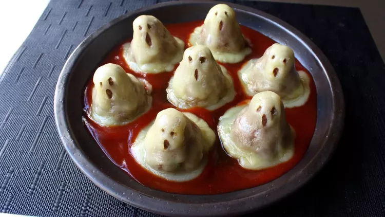

Mini Meatloaf Ghosts

Description
For a delicious crowd pleaser that will have your family cheering, who ya gonna call? Ghost meatloaf! Turn your favorite meatloaf recipe into these absolutely adorable, yet still incredibly terrifying, edible apparitions. They're easy and fun to make and the leftovers make great "ghost on toast" sandwiches.
Ingredients
- 1 pound lean ground beef
- 1 ½ teaspoons kosher salt
- ½ teaspoon freshly ground black pepper
- 1 pinch cayenne pepper
- 2 tablespoons minced green onions
- 1 tablespoon chopped fresh parsley, or to taste
- ⅓ cup plain dry bread crumbs
- 1 large egg, beaten
- 1 teaspoon Worcestershire sauce
- 10 slices provolone cheese
- ½ cup ketchup
- ¼ cup barbeque sauce
- 2 tablespoons Sriracha sauce
Steps
- Combine ground beef, salt, pepper, cayenne, green onions, parsley, bread crumbs, egg, and Worcestershire sauce in a large bowl. Mix with a fork until just combined; do not over-mix. Wrap and chill in the refrigerator for 1 hour.
- Preheat the oven to 350 degrees F (175 degrees C). Line a sheet pan with a silicone liner.
- Remove meat from the refrigerator and divide into 8 equal portions. Dampen your fingers with cold water and roll meat into smooth balls. Form each ball into a ghost (or pear) shape and place on the prepared sheet pan; try to center the heads over the bodies.
- Bake in the center of the preheated oven until cooked through, about 20 minutes. An instant-read thermometer inserted into the center should read at least 150 degrees F (66 degrees C).
- Remove from the oven and immediately place a slice of provolone cheese on the top of each ghost, centering it the best you can. Cut the remaining 2 slices of provolone into quarters and place those over the center to provide more cheese for the head. The residual heat from the meat will start to melt the cheese and it will droop down.
- Return to the oven until the cheese melts, 30 to 60 seconds.
- Remove from the oven and take some of the melted cheese around the bottoms and wrap and drape it back up over the heads. Use the tip of a knife to form eyes and mouths, then neaten up the bottom of the cheese "sheets."
- Combine ketchup, barbecue sauce, and Sriracha for blood sauce; ladle onto plates and serve meatloaf ghosts on top.